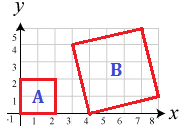

Trong mặt phẳng tọa độ, cho một lưới các điểm nguyên có kích thước n+1 dòng và m+1 cột. Điều đó có nghĩa là nếu (x, y) là một điểm nguyên trong lưới thì 0 ≤ x ≤ m và 0 ≤ y ≤ n. Người ta có thể chọn 4 điểm nào đó trong lưới để tạo thành các hình vuông như hình bên dưới (n=5 và m=8).

Trong số các hình vuông này, diện tích của một số hình vuông là lẻ (diện tích của B là 17), các hình vuông còn lại có diện tích là chẵn (diện tích của A là 4). Bạn hãy đếm xem tổng cộng có bao nhiêu hình vuông có diện tích lẻ nhé.
Dữ liệu nhập:
- Là hai số nguyên n và m cách nhau một khoảng trắng (1 ≤ n, m ≤ 105)
Dữ liệu xuất:
- Là số lượng số hình vuông có diện tích lẻ. Kết quả đảm bảo số lượng này là số nguyên 64 bít.